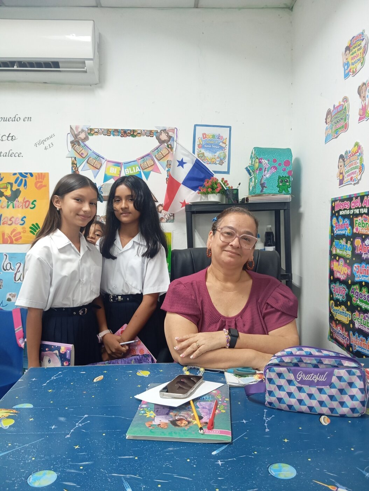
Persona entrevistada · Interviewee
Nimia Sanjur
Maestra de 2.º gradoSecond Grade Teacher
Estudiantes entrevistadores · Student interviewers
Nazareth Jiménez y Danais Otero
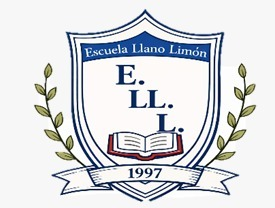
Llano LimónElementary SchoolES + ENEscuela Llano Limón · Panamá
Un proyecto bilingüe de sexto grado que conserva la memoria de nuestra escuela a través de las voces de quienes la construyen cada día.
A bilingual sixth-grade project preserving our school’s memory through the voices of the people who build it every day.
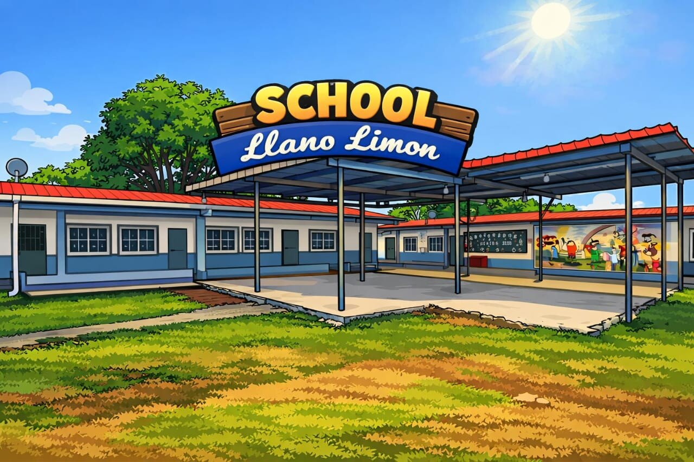
Nuestra historia · Our history
La Escuela Llano Limón fue fundada en 1997 en el corazón de nuestra comunidad. En sus inicios funcionó como un anexo de la Escuela Santiago Bolaños y contaba solamente con dos salones de clases.
Llano Limón Elementary School was founded in 1997 in the heart of our community. At first, it operated as an annex of Santiago Bolaños School and had only two classrooms.
María Eugenia Castillo fue la primera maestra. Con dedicación y esfuerzo, inició la educación de los niños y niñas de Llano Limón. Gracias a su labor y al compromiso de la comunidad, la escuela creció con el paso de los años.
María Eugenia Castillo was the first teacher. With dedication and hard work, she began teaching the children of Llano Limón. Thanks to her service and the community’s commitment, the school grew over the years.
Hoy contamos con más aulas, docentes y estudiantes que aprenden con orgullo. Nuestra escuela continúa formando a las nuevas generaciones.
Today, we have more classrooms, teachers, and students who learn with pride. Our school continues to educate new generations.
Fundación de la escuelaThe school is founded
Anexo de Santiago BolañosAnnex of Santiago Bolaños School
Primera maestra: María Eugenia CastilloFirst teacher: María Eugenia Castillo
Una comunidad en crecimientoA growing learning community
Voces de nuestra escuela · Voices of our school
Estudiantes de sexto grado entrevistaron a docentes y al director para conocer la historia escolar.
Sixth-grade students interviewed teachers and the principal to learn about the school’s history.

Persona entrevistada · Interviewee
Maestra de 2.º gradoSecond Grade Teacher
Estudiantes entrevistadores · Student interviewers
Nazareth Jiménez y Danais Otero
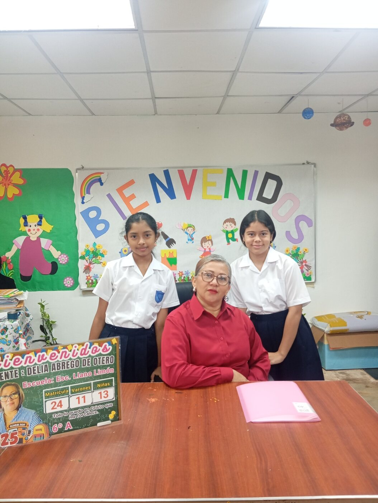
Persona entrevistada · Interviewee
Maestra de 6.º gradoSixth Grade Teacher
Estudiantes entrevistadores · Student interviewers
Saara Adames y Liannis Sanjur
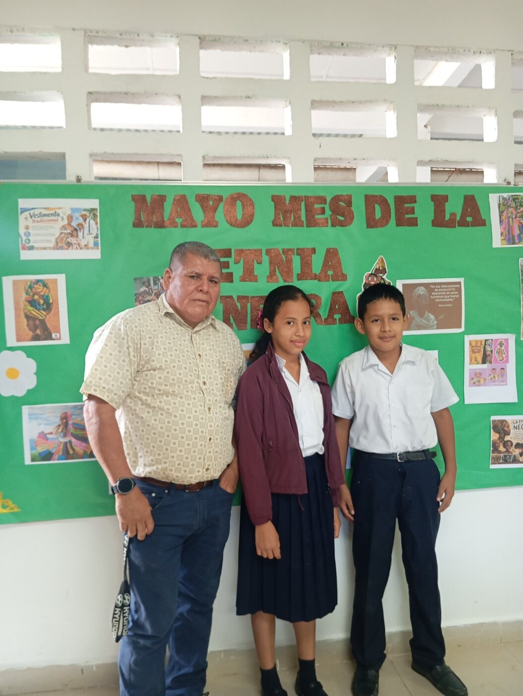
Persona entrevistada · Interviewee
Maestro de 5.º AFifth Grade A Teacher
Estudiantes entrevistadores · Student interviewers
María Sanjur y Elías Guerra
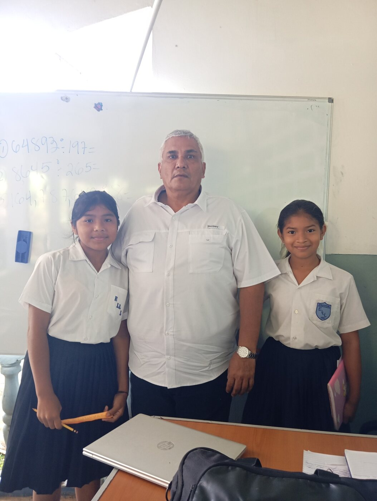
Persona entrevistada · Interviewee
Maestro de 5.º BFifth Grade B Teacher
Estudiantes entrevistadores · Student interviewers
Sharlene Cedeño y Yajaira Sánchez
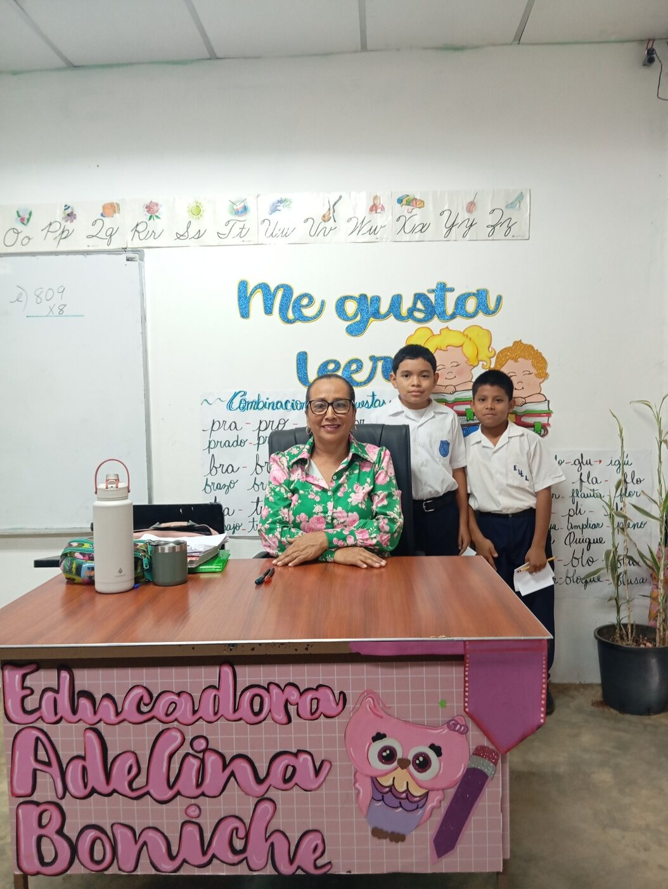
Persona entrevistada · Interviewee
Maestra de 3.er gradoThird Grade Teacher
Estudiantes entrevistadores · Student interviewers
Erick Rodríguez y David Mendoza
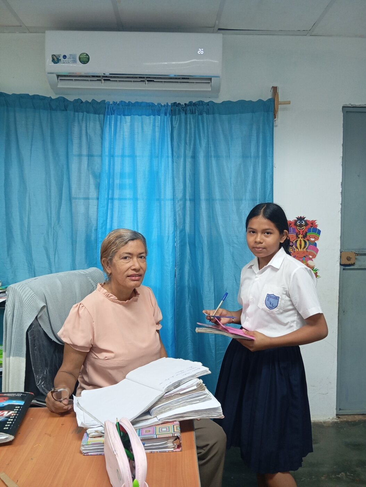
Persona entrevistada · Interviewee
Maestra de prekindergartenPrekindergarten Teacher
Estudiantes entrevistadores · Student interviewers
Fátima Martínez
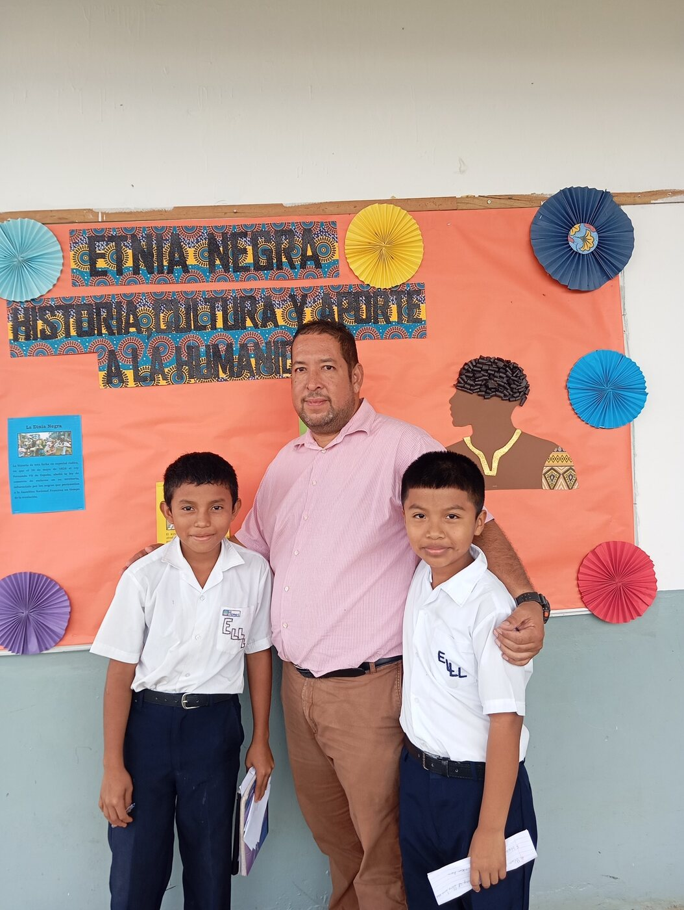
Persona entrevistada · Interviewee
DirectorPrincipal
Estudiantes entrevistadores · Student interviewers
Tomás Castillo y Onésimo Sánchez
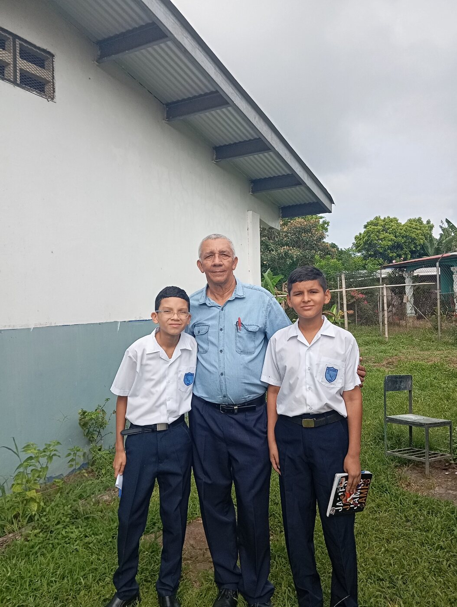
Persona entrevistada · Interviewee
Maestro de Ciencias NaturalesNatural Science Teacher
Estudiantes entrevistadores · Student interviewers
Jean de Gracia y Carlos James Rodríguez
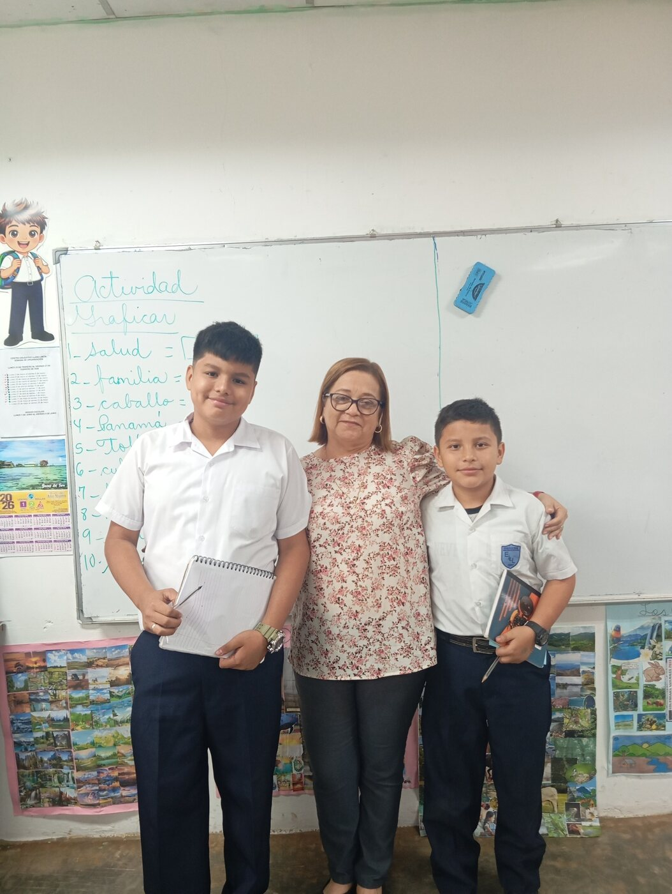
Persona entrevistada · Interviewee
Maestra de 4.º gradoFourth Grade Teacher
Estudiantes entrevistadores · Student interviewers
Héctor Álvarez y Lorenzo Sanjur
Proyecto de sexto grado · Sixth-grade project
Este proyecto convirtió a los estudiantes en investigadores. Prepararon preguntas, escucharon testimonios y documentaron la memoria escolar.
This project turned students into researchers. They prepared questions, listened to testimonies, and documented school memories.